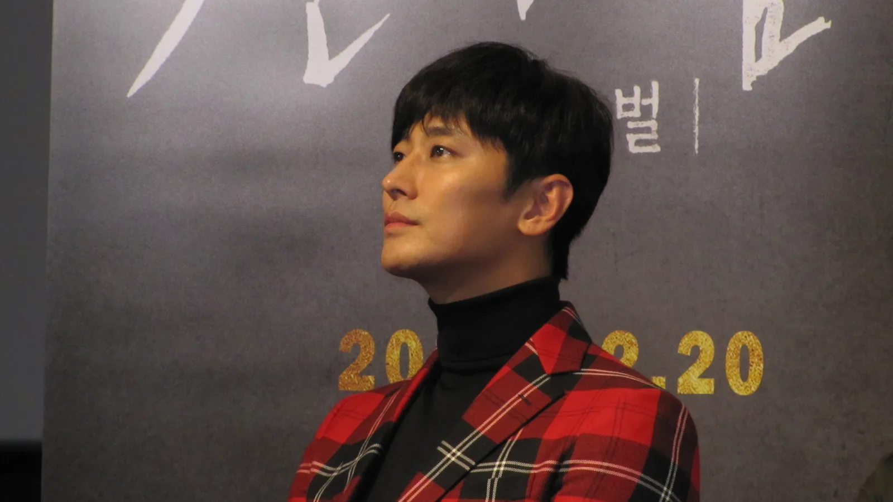
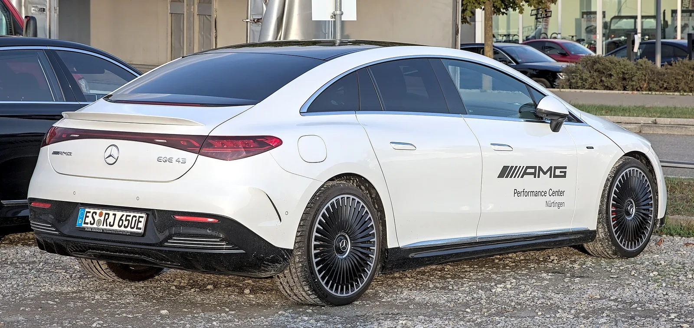

▲ 메르세데스-AMG C63. AMG는 벤츠의 고성능 서브 브랜드로, 배우 주지훈이 이 브랜드의 앰버서더로 활동하고 있다 ⓒ Wikimedia Commons
2021년 4월, 메르세데스-벤츠 코리아가 고성능 럭셔리 브랜드 메르세데스-AMG의 브랜드 앰버서더로 배우 주지훈을 선정했습니다. 주지훈은 2년간 AMG의 각종 행사와 고객 이벤트에 참석하고, 활동 기간 동안 AMG 차량을 외부 활동용으로 지원받습니다. 앞서 이 시리즈에서 다룬 제네시스×한소희(영화 '인턴' 협업), 볼보×김혜수·조여정(드라마 배역 배분) 사례와 나란히 놓고 보면, 이번 발탁에는 분명히 다른 결이 있습니다. 배역이 아니라 배우 자신의 필모그래피와 이미지를 그대로 브랜드에 붙인 사례이기 때문입니다.
1. 왜 하필 주지훈이었나 — 필모그래피가 답이다

▲ 메르세데스-AMG S63. AMG 라인업의 최상위 세단으로, 브랜드의 '고성능·플래그십' 이미지를 대표한다 ⓒ Wikimedia Commons
브랜드 앰버서더 발탁은 결국 이미지 매칭의 문제입니다. 주지훈이 대중에게 각인된 지점은 영화 '신과함께' 시리즈로 천만 배우에 등극한 이력, 첩보물 '공작'과 실화 기반 범죄물 '암수살인'에서 보여준 밀도 높은 연기, 그리고 넷플릭스 '킹덤' 시리즈로 얻은 글로벌 인지도입니다. 공통점은 뚜렷합니다. 느긋하거나 순한 이미지가 아니라, 긴장감과 추진력을 가진 캐릭터로 소비돼온 배우라는 점입니다.
AMG는 1967년 설립된 이래 메르세데스-벤츠의 엔진 튜닝·고성능화를 전담해온 브랜드입니다. 35에서 63까지 이어지는 라인업은 367마력에서 639마력에 이르며, '현재에 안주하지 않고 끊임없이 도전한다'는 것이 벤츠 측이 내세우는 브랜드 정체성입니다. 주지훈 본인도 선정 소감에서 "AMG는 현재에 안주하지 않고 끊임없이 도전하는 브랜드라는 점에서 특별하고 매력적"이라고 밝혔습니다. 마크 레인 부사장의 코멘트 역시 "그의 카리스마와 열정적인 모습이 AMG의 퍼포먼스와 완벽하게 어우러져 발휘할 시너지가 기대된다"는 표현으로, 배우의 개인사나 사생활이 아니라 공개된 필모그래피에서 읽히는 이미지와 브랜드 정체성의 일치를 발탁 근거로 제시했습니다.

▲ 2017년 12월 영화 '신과함께: 죄와 벌' 제작보고회에 참석한 배우 주지훈. AMG가 앰버서더 발탁 근거로 든 필모그래피의 상당 부분이 이 시리즈에서 나왔다 ⓒ sisaprime, Wikimedia Commons (CC BY 4.0)
| 브랜드 | 협업 형태 | 배우 | 매칭 방식 |
|---|---|---|---|
| 제네시스 GV80 | 영화 PPL | 한소희 | 배역(인턴) 이미지 — 배우 본인 이미지와 무관 |
| 볼보 XC90·S90 | 드라마 협찬 | 김혜수·조여정 | 배역(인플루언서·원장) 성격에 맞춘 차종 배분 |
| 메르세데스-AMG | 브랜드 앰버서더 | 주지훈 | 배우 본인의 필모그래피·이미지와 브랜드 정체성 직접 매칭 |

▲ 메르세데스-AMG GT 63 S 4도어 쿠페. AMG 특유의 낮고 공격적인 실루엣을 대표하는 모델이다 ⓒ Wikimedia Commons
2. 배역이 아니라 배우를 캐스팅하다
앞서 다룬 두 사례와 비교하면 이 지점이 더 선명해집니다. 제네시스는 영화 '인턴'에서 한소희에게 GV80을 붙였는데, 이는 한소희 본인의 이미지가 아니라 극 중 배역의 설정에 맞춘 선택이었습니다. 볼보 역시 김혜수와 조여정 개인이 아니라 그들이 연기하는 인플루언서·전문직 캐릭터의 성격에 XC90과 S90을 각각 배분했습니다. 두 사례 모두 '배우가 연기하는 인물'과 '차량의 소비자 페르소나'를 연결하는 구조였습니다.
AMG×주지훈은 이 구조에서 한 단계 더 나아갑니다. 특정 작품이나 배역이 매개가 아니라, 배우 본인이 지금까지 쌓아온 공개된 이미지 자체가 브랜드 캐릭터와 직결됩니다. 앰버서더 계약은 드라마 한 편, 영화 한 편의 협찬으로 끝나지 않고 2년이라는 기간 동안 각종 행사와 캠페인에 지속적으로 노출되는 방식입니다. 특정 작품의 흥행이나 종영 시점에 좌우되지 않는다는 점에서, PPL보다 훨씬 장기적이고 브랜드 주도적인 마케팅 구조입니다.

▲ 메르세데스-AMG CLA 45 S. 주지훈의 앰버서더 활동 기간 동안 AMG는 CLA 45 S를 포함한 다양한 라인업을 외부 활동용으로 지원했다 ⓒ Wikimedia Commons
실제 활동 내역도 언론 보도로 확인됩니다. 이데일리는 2023년 3월 30일 경기 고양 킨텍스에서 열린 '2023 서울모빌리티쇼' 미디어데이에서 주지훈이 더 뉴 메르세데스-AMG SL 63 4MATIC+와 함께 포토타임을 가진 모습을 여러 차례 보도했습니다. 2021년 4월 발표된 2년 계약 기간의 막바지에 해당하는 시점으로, 앰버서더 활동이 계약 종료 시점까지 실제로 이어졌음을 보여주는 근거입니다. 다만 2023년 4월 계약 만료 이후 재계약이나 활동 연장 여부를 명시적으로 보도한 매체는 확인되지 않았습니다.

▲ 메르세데스-AMG CLE 45. AMG 라인업 중 진입 장벽이 상대적으로 낮은 쿠페 모델이다 ⓒ Wikimedia Commons
3. 앰버서더 발탁과 함께 나온 오너 멤버십
이번 발표에서 눈에 띄는 또 하나는 타이밍입니다. 벤츠코리아는 주지훈의 앰버서더 선정과 같은 날, 국내 AMG 오너를 위한 멤버십 프로그램 'AMG 오너 커뮤니티 코리아(AOCK)'를 출범시켰습니다. AOCK는 전용 트랙 데이·테크 데이 초청, 신차 출시 행사와 자선 레이스 경기 초청, 프라이빗 라운지 이용, 웰컴 기프트와 정기 뉴스레터 제공 등을 회원 혜택으로 내세웁니다.

▲ 메르세데스-AMG A45 S 파이널 에디션. 35~45 라인업은 AMG 진입 단계 오너들이 AOCK 멤버십의 실질적인 대상이 된다 ⓒ Wikimedia Commons
앰버서더와 오너 멤버십을 같은 날 묶어 발표한 것은 우연이 아닙니다. 유명인을 앞세운 이미지 마케팅과, 실제 구매자를 붙잡아두는 로열티 프로그램을 동시에 가동함으로써 잠재 구매층을 향한 인지도 확산과 기존 구매층의 이탈 방지를 한 번에 노리는 구조입니다. AMG처럼 판매 대수 자체는 많지 않은 고성능·고가 라인업일수록, 신규 유입보다 기존 오너를 브랜드 안에 오래 붙잡아두는 것이 매출에 더 직접적으로 기여한다는 계산이 깔려 있습니다.

▲ AMG C63 실내. AOCK 멤버십은 이런 차량을 이미 보유한 오너들을 대상으로 한 로열티 프로그램이다 ⓒ Wikimedia Commons
4. 전동화 시대의 AMG, 앰버서더 전략은 유효할까

▲ 메르세데스-AMG EQE 43. 전동화 라인업까지 확장된 AMG는 앞으로도 '고성능 이미지'를 어떻게 유지하느냐가 관건이다 ⓒ Wikimedia Commons
AMG는 이후 EQE 43, EQS 53 등 전동화 모델로도 라인업을 넓혀왔습니다. 내연기관 시절 형성된 '엔진 소리와 가속감'이라는 AMG의 정체성이 전기차 시대에도 그대로 통할지는 브랜드가 풀어야 할 숙제입니다. 그런 맥락에서 앰버서더의 존재는 더 중요해집니다. 파워트레인이 무엇이든, 배우가 상징하는 긴장감 있는 이미지는 변하지 않기 때문입니다. 실제로 벤츠코리아는 앰버서더 활동을 두고 "여러 방면에서 브랜드 마케팅 활동을 펼치겠다"는 입장을 밝힌 바 있어, 특정 모델 하나가 아니라 AMG 브랜드 전체의 이미지 관리 차원에서 이 발탁을 접근하고 있음을 보여줍니다.
정리하면, 이 소식은 단순히 유명 배우가 광고 모델로 발탁됐다는 가십이라기보다는, 고성능 브랜드가 배역이 아닌 배우 자신의 공개된 이미지를 자산으로 사들이는 마케팅 방식을 보여주는 사례입니다. 같은 시리즈 안에서 제네시스와 볼보가 '배역에 차를 맞추는' 전략을 택했다면, AMG는 '배우 그 자체를 브랜드로 흡수하는' 한 단계 다른 접근을 택한 셈입니다.